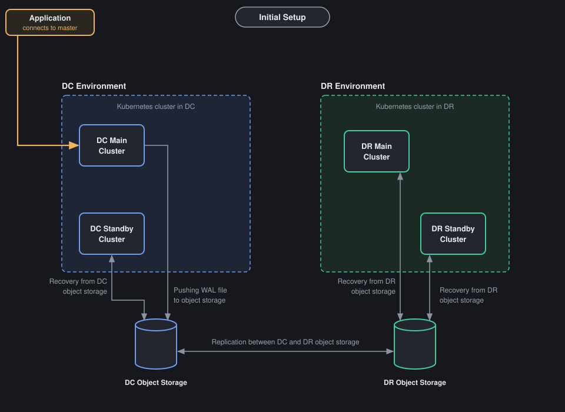
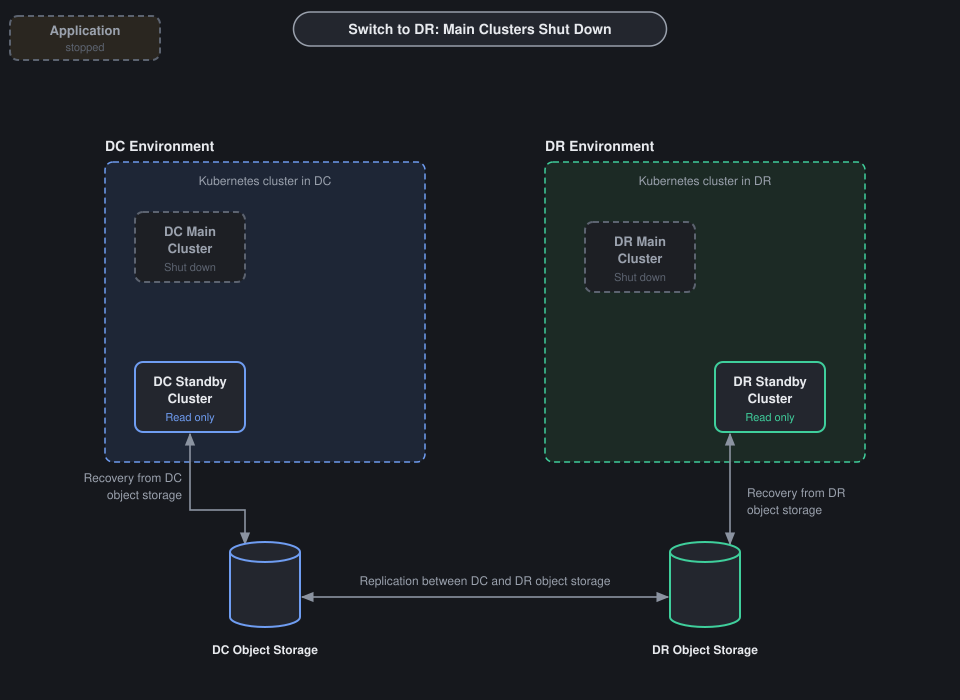
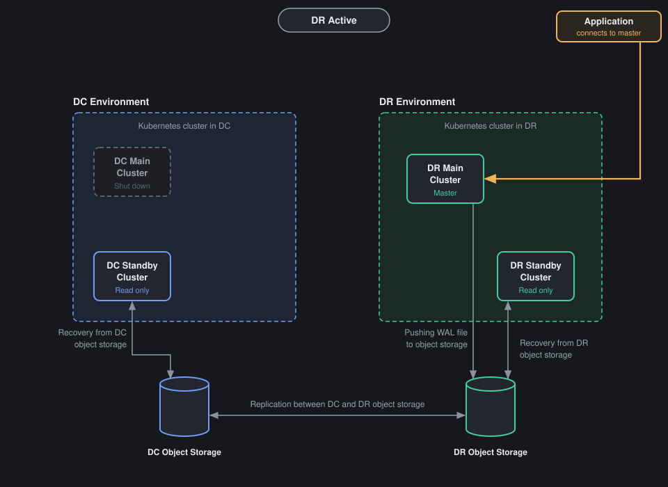
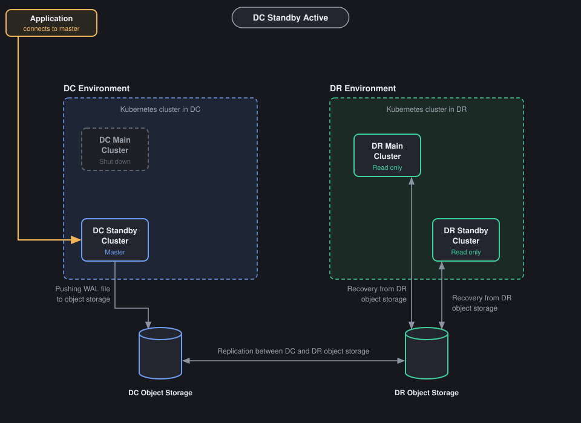

DC / DR setup and DR drill¶
This page tells how our keenPGO database runs on two sites, DC and DR. It also tells how to do the DR drill, step by step.
First we move the database from DC to DR. Then we bring it back from DR to DC with the same method.
What you will learn
- How the DC and DR sites are set up, and why we need a standby cluster.
- Which main cluster is active, and how the
standbysetting decides it. - How to move the database from DC to DR, step by step.
- How to bring it back from DR to DC with the same method.
- Why a drill can fail, and what to check before you start.
Contents¶
-
Understand the setup
-
Run the drill
-
Prepare and fix
Who should read this¶
-
Platform engineers
Who Set up the DC and DR clusters.
-
DBAs
Who Run the DR drill.
-
On-call engineers
Who Need the steps during a real problem.
Initial setup¶

Initial setup
The same setup as a diagram of how data flows:
flowchart LR
DCM["1. DC main<br/>read-write"] -->|"2. WAL"| DCO["3. DC object storage"]
DCO -->|"4. recover"| DCS["5. DC standby<br/>read-only"]
DCO <-->|"6. replicate both ways"| DRO["7. DR object storage"]
DRO -->|"8. recover"| DRM["9. DR main<br/>read-only"]
DRO -->|"10. recover"| DRS["11. DR standby<br/>read-only"]
classDef step fill:#7986cb26,stroke:#7986cb,stroke-width:2px
classDef ok fill:#43a04726,stroke:#43a047,stroke-width:2px
classDef opt fill:#9575cd26,stroke:#9575cd,stroke-width:2px
class DCO,DRO step
class DCM ok
class DCS,DRM,DRS opt- One keenPGO operator is on top and manages everything.
- DC and DR are two different Kubernetes clusters.
- Each site has two database clusters:
| Cluster | What it is |
|---|---|
| Main cluster | Primary and replica pods. DC main is in namespace demo-dc, DR main is in namespace demo-dr. |
| Standby cluster | One pod, read only, in its own namespace. It always recovers from the object storage of its own site. |
- Each site has its own object storage.
- The two object storages replicate both ways (like master - master).
- DC main cluster is the only one that takes writes. It pushes WAL files to DC object storage.
- DC standby cluster recovers from DC object storage.
- The WAL is copied to DR object storage. DR main cluster and DR standby cluster both recover from it.
- DR main cluster has the same number of pods as DC main, but it is read only.
Why we need a standby cluster¶
- HA inside one site (primary + replicas) only saves us when a pod or a node fails.
- If the full DC goes down (power, network, storage or Kubernetes problem), all pods go down together.
- The standby cluster has a full copy of the data, kept up to date from object storage.
- It is already running and replaying WAL, so we can promote in minutes. Restore from backup can take hours for a big database.
- Data loss is small, because WAL is shipped all the time, not once a day.
- Standby is read only, so nobody can write on it by mistake.
- During the drill, when the DC main cluster is shut down, the DC standby cluster still keeps a live copy of the data on the DC side.
- Before we switch back, we check the data on the DC standby cluster.
- We can run reports and read-only queries on a standby.
Standby cluster is not a backup
If someone drops a table on the main cluster, it is dropped on all standbys also. For this we still need backups and point-in-time restore.
Which main cluster is active¶
The standby setting in the main cluster decides which site is active.
| State | DC main standby.enabled |
DR main standby.enabled |
Apps write to |
|---|---|---|---|
| Normal (DC active) | false |
true |
DC main |
| DR active | true (and shut down) |
false |
DR main |
The standby clusters on both sites always have standby.enabled: true.
When DC is active, the DC main kustomize file has:
And the DR main kustomize file has:
spec:
standby:
enabled: true
repoName: <repo that points at DR object storage>
Only one main cluster can have standby.enabled: false
If both main clusters are primary at the same time, both take writes and the data becomes different on both sides (split brain). So we always shut down the old main cluster first, and only then promote the other one.
DR drill: switch from DC to DR¶
Do these steps one by one
Do not skip any step.
The six steps from DC to DR:
flowchart LR
A["1. Stop apps"] --> B["2. Close connections,<br/>switch WAL"] --> C["3. Shut down<br/>DC main"] --> D["4. Check sync,<br/>shut down DR main"] --> E["5. Promote and<br/>start DR main"] --> F["6. Apps to DR"]
classDef step fill:#7986cb26,stroke:#7986cb,stroke-width:2px
classDef ok fill:#43a04726,stroke:#43a047,stroke-width:2px
class A,B,C,D,E step
class F okStep 1: Shut down the application¶
Stop all applications that connect to the DC main cluster. Scale the app deployments to 0, or stop them in the way your team does it.
If you use pgBouncer, stop it also, so no new connection comes.
Step 2: Check connections, close them, then switch WAL¶
Find the primary pod of the DC main cluster:
The pod with role Leader is the primary.
Connect to the primary:
Check who is still connected:
SELECT pid, usename, datname, client_addr, application_name, state
FROM pg_stat_activity
WHERE backend_type = 'client backend'
AND pid <> pg_backend_pid();
If any app connection is still there, close it:
SELECT pg_terminate_backend(pid)
FROM pg_stat_activity
WHERE backend_type = 'client backend'
AND pid <> pg_backend_pid();
Add one test row, so we can check later that DR has all the data:
CREATE TABLE IF NOT EXISTS dr_drill_check (checked_at timestamptz, note text);
INSERT INTO dr_drill_check VALUES (now(), 'before DC shutdown');
Now take a checkpoint and switch WAL, so the last WAL file goes to object storage:
Write down the LSN
Write down the LSN from the last command. We need it in step 4.
Check that the WAL is archived and there is no failure:
SELECT last_archived_wal, last_archived_time, failed_count, last_failed_wal
FROM pg_stat_archiver;
last_archived_time should be just now.
Archiving failures
If failed_count goes up, stop here and fix archiving first.
Step 3: Shut down the DC main cluster¶
kubectl patch keenpgcluster/demo-dc-db-pod -n demo-dc --type merge --patch '{"spec":{"shutdown": true}}'
Check that the database pods are gone:
Expected output (no database pods; backup or other helper pods can still be there):
Now, for safety, set DC main to standby in the DC main kustomize file. So if somebody starts it by mistake, it comes up read only, not as a second primary.
spec:
standby:
enabled: true
repoName: <repo that points at DC object storage>
Do not touch the DC standby cluster
It keeps running and recovering from DC object storage.
Step 4: Check sync on DR, then shut down the DR main cluster¶
First check that the DR main cluster has all the data from DC.
Connect to the DR main standby leader:
kubectl exec -it <any-db-pod> -n demo-dr -- patronictl list
kubectl exec -it <dr-standby-leader-pod> -n demo-dr -- psql -U postgres
Check that it is still a standby:
It should say t.
Check how much WAL is replayed:
SELECT pg_last_wal_replay_lsn(), pg_last_xact_replay_timestamp();
SELECT pg_wal_lsn_diff('<lsn-from-step-2>', pg_last_wal_replay_lsn());
The second query should give 0 or a negative number. If it gives a positive number, DR is still behind. Wait and check again.
Check the test row:
You should see the row before DC shutdown. You can run the same checks on the DC standby cluster and the DR standby cluster also.
When sync is OK, shut down the DR main cluster before promotion:
kubectl patch keenpgcluster/demo-dr-db-pod -n demo-dr --type merge --patch '{"spec":{"shutdown": true}}'
Now both main clusters are down. Nobody can write. Only the two standby clusters are running.

Switch to DR: main clusters shut down
Step 5: Promote DR main and start it¶
Set standby to false in the DR main kustomize file:
Apply the kustomize:
Start the DR main cluster:
kubectl patch keenpgcluster/demo-dr-db-pod -n demo-dr --type merge --patch '{"spec":{"shutdown": false}}'
Watch the pods come up:
Check that DR main is now primary:
One pod should have role Leader (not Standby Leader). In psql, SELECT pg_is_in_recovery(); should now say f.
Step 6: Point the apps to DR and start them¶
- Change the DNS or connection string to the DR main primary service.
- Start the apps and pgBouncer.
- Do a small write test and check the app is working.
- Check that new WAL and backups go to DR object storage.
This is how it looks now:

DR active
- DR main cluster is primary and pushes WAL to DR object storage.
- DR standby cluster recovers from DR object storage.
- DC main cluster is shut down.
- On the DC side only the DC standby cluster (1 pod) is running. It recovers DR WAL from DC object storage, which comes by the both-way replication.
DR drill: switch back from DR to DC¶
We use the same method, only the sites are opposite.
The seven steps from DR back to DC:
Step 1: Shut down the application¶
Stop all apps and pgBouncer that connect to the DR main cluster.
Step 2: Check connections, close them, then switch WAL¶
Connect to the DR main primary:
Close any open app connection (same queries as before):
SELECT pg_terminate_backend(pid)
FROM pg_stat_activity
WHERE backend_type = 'client backend'
AND pid <> pg_backend_pid();
Add the test row, switch WAL and note the LSN:
INSERT INTO dr_drill_check VALUES (now(), 'before DR shutdown');
CHECKPOINT;
SELECT pg_switch_wal();
SELECT pg_current_wal_lsn();
SELECT last_archived_wal, last_archived_time, failed_count FROM pg_stat_archiver;
Step 3: Shut down the DR main cluster¶
kubectl patch keenpgcluster/demo-dr-db-pod -n demo-dr --type merge --patch '{"spec":{"shutdown": true}}'
For safety, set DR main back to standby in the DR main kustomize file and apply it:
spec:
standby:
enabled: true
repoName: <repo that points at DR object storage>
Step 4: Check sync on the DC standby cluster, then shut it down¶
Do not start the DC main cluster
It stays shut down. We come back on the DC standby cluster, because it was running the whole time and has the latest data.
Switch back to DC: DR main shut down
Connect to the DC standby cluster:
kubectl exec -it <dc-standby-pod> -n <dc-standby-namespace> -- psql -U postgres
Check the data:
SELECT pg_is_in_recovery();
SELECT pg_wal_lsn_diff('<lsn-from-step-2>', pg_last_wal_replay_lsn());
SELECT * FROM dr_drill_check ORDER BY checked_at DESC LIMIT 1;
| Check | Expected result |
|---|---|
pg_is_in_recovery() |
t |
| LSN diff | 0 or negative |
| Test row | before DR shutdown |
Also check the logs for any WAL or timeline error:
When everything is OK, shut down the DC standby cluster before promotion:
kubectl patch keenpgcluster/<dc-standby-cluster> -n <dc-standby-namespace> --type merge --patch '{"spec":{"shutdown": true}}'
Step 5: Promote the DC standby cluster and start it¶
In the DC standby kustomize file set standby to false:
Apply the kustomize:
Start it:
kubectl patch keenpgcluster/<dc-standby-cluster> -n <dc-standby-namespace> --type merge --patch '{"spec":{"shutdown": false}}'
Check that it is now the master:
The pod should have role Leader (not Standby Leader). In psql, SELECT pg_is_in_recovery(); should now say f.
Step 6: Point the apps to the DC standby cluster and start them¶
- Change the DNS or connection string to the primary service of the DC standby cluster.
- Start the apps and pgBouncer, and do a small write test.
- Check that new WAL goes to DC object storage.
- Start DR main again. It comes up as standby, because we set
standby: truein step 3:
kubectl patch keenpgcluster/demo-dr-db-pod -n demo-dr --type merge --patch '{"spec":{"shutdown": false}}'
This is how it looks now:

DC standby active
- DC standby cluster is now the master. The application connects to it.
- It pushes WAL to DC object storage.
- DR main and DR standby recover from DR object storage.
- DC main cluster is still shut down.
Step 7: Recreate the DC main cluster as standby¶
Do not start the old DC main cluster as it is
The DC standby cluster is now the current master. The old DC main cluster is shut down and its data is old (it is on the old timeline). Do not start it as it is, and never set standby: false on it.
Recreate it as a standby of the current master:
- Keep
shutdown: trueondemo-dc-db-pod. - Delete the old DC main cluster and its data volumes (PVCs).
- In the DC main kustomize file set
standby.enabled: trueandrepoNamepointing at DC object storage. - Apply the kustomize and set
shutdown: false. - It restores from the latest backup in DC object storage and then keeps recovering WAL.
- Check
pg_is_in_recovery()istand the lag is small.
New roles for the next drill
Now the DC main cluster is the standby, and the DC standby cluster is the master. For the next drill, use these new roles.
Quick reference¶
| Step | DC → DR | DR → DC |
|---|---|---|
| 1 | Stop apps on DC | Stop apps on DR |
| 2 | Close connections, switch WAL on DC main | Close connections, switch WAL on DR main |
| 3 | Shut down DC main, set standby: true |
Shut down DR main, set standby: true |
| 4 | Check sync on DR main, shut down DR main | Check sync on DC standby, shut down DC standby |
| 5 | DR main standby: false, apply kustomize, start |
DC standby standby: false, apply kustomize, start |
| 6 | Apps → DR main | Apps → DC standby, start DR main as standby |
| 7 | Recreate DC main as standby |
Why the drill can fail¶
These are the common reasons. Check them before the drill.
| Problem | What happens |
|---|---|
| Apps are not fully stopped | Some writes come after the WAL switch, and the other side misses them. |
| WAL archiving is failing | Wrong bucket keys or a full bucket. failed_count in pg_stat_archiver goes up. |
| Object storage replication is slow or broken | The last WAL file did not reach the other site yet. |
| Standby is not replaying | Wrong repoName, a missing WAL file, or the standby was already behind before the drill. |
We forgot standby: true on the old main cluster |
When it starts again, both sides are primary (split brain). |
| Kustomize file not updated | Wrong path, or the change is not saved in git, so a sync tool puts the old value back. |
| Operator is not working | The patch is accepted, but nothing happens to the pods. |
| Pods stay Pending on the other site | Not enough nodes, CPU or memory, PVC or storage class problem, or anti-affinity cannot be met. |
| Timeline problem when coming back | After DR main is promoted it starts a new timeline. If the DC standby cluster cannot follow it, it must be rebuilt from a DR backup. |
| Old DC main started by mistake | Its data is old. It must be recreated as standby, never started as primary. |
| Users or secrets are different on the two sites | Apps cannot log in after the switch. |
| Apps still point to the old site | DNS TTL is long, or pgBouncer or the app has the old address cached. |
| Network or firewall issue | A site cannot reach its object storage. |
| Long running sessions | They keep coming back, so the shutdown takes too long. |
DR checklist¶
- keenPGO operator manages all four clusters (DC main, DC standby, DR main, DR standby)
- DC main has
standby.enabled: false, all others havestandby.enabled: true - DR main has the same number of pods as DC main, and enough nodes
- Both object storages are working and replicate both ways
- WAL archiving has no failures and standby lag is small
- WAL retention is long enough to cover the full drill time
- Kustomize paths for both main clusters are known and in git
- App connection strings can be changed quickly
- Drill is done in a test environment first, then in production
- Backups and monitoring cover both sites